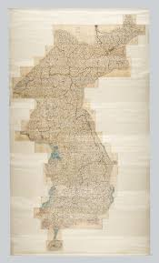

대동여지도 (大東輿地圖)
"우리나라 전체를 수레[輿]에 땅을 담듯이 그린 조선 지리학의 결정체"

- 의의: 1861년(철종 12) 고산자 김정호(金正浩)가 오랫동안 축적된 지리지 편찬 경험과 선대 지도 기술을 집대성하여 목판본으로 간행한 조선 시대 최대·최고의 과학적 전국지도. (1864년 고종 1년에 개정 판본 간행).
- 규모: 현존하는 전통 전국지도 중 가장 큰 크기 (세로 6.6m, 가로 3.8m). 전시하려면 최소 3개 층의 공간이 필요할 정도의 초대형 지도.
- 현존 유물: 국내외에 50여 종(신유본 20여 종, 갑자본 및 필사본 등)이 전해지며, 국내에는 가장 초기 판본인 보물 제850-1호(성신여대 박물관 소장)를 비롯해 보물 제850-2호, 제850-3호 등이 지정되어 있음. 판각에 쓰인 피나무 목판 12장(보물 제1581호)도 국립중앙박물관 등에 현존함.
1. 제작 배경과 김정호의 선행 연구
대동여지도는 김정호가 20대(1820년대)부터 평생에 걸쳐 추진한 국토 정보 시각화 작업의 최종 결과물입니다.- 지리지와 지도의 상호 보완: 김정호는 『동여도지』, 『여도비지』, 『대동지지』 등의 방대한 지리지(책)를 먼저 편찬했습니다. 축적된 지리 텍스트 데이터를 바탕으로 지도를 제작했기 때문에 국토의 실제 지형을 현대 지도 못지않게 완벽히 구현할 수 있었습니다.
- 단계적 지도 발전 체계: 1. 1820년대~: 기존 지도의 장점을 모아 대축척 책자형 지도인 「청구도(靑邱圖)」를 세 차례 편찬. 2. 1850년대~: 축척 212,000:1의 대동여지도 초본 제작. 3. 이후: 축척 166,000:1의 정밀 채색 필사본 전도인 「동여도(東輿圖)」(23책) 완성. 4. 1861년: 「동여도」를 목판 인쇄용으로 단순화·보완하여 목판본 「대동여지도」(22첩) 최종 간행.
2. 지도의 구성 및 형태적 혁신
분첩절첩식(分帖折疊式) 구조 (휴대성과 열람성의 혁신)
전체 크기는 거대하지만, 한 장짜리 통지도가 아니라 병풍처럼 접고 펼 수 있는 22첩의 책태(첩)로 분할 제작되었습니다.- 도첩 규격: 전국을 남북으로 120리 간격(22개 층/22첩)으로 나누고, 동서로는 80리 간격(1~8면)으로 나누어 절첩식으로 접었습니다.
- 활용성: 평소에는 책장에 넣어두었다가 필요한 지역의 첩만 쏙 뽑아서 들고 다닐 수 있는 탁월한 휴대성을 자랑하며, 한 지역의 위아래 첩을 이어 붙이면 넓은 지역의 지형을 한눈에 열람할 수 있습니다.
- 표제 및 간기: '대동여지도', '철종 12년(1861)', '고산자교간'을 명시하여 제작 연대와 제작자를 명확히 밝힘.
- 방안표(方眼表): 축척을 나타내는 표로 세로 120리, 가로 80리를 기준 삼음.
- 지도표(地圖標): 영아, 읍치, 성지, 봉수, 창고, 도로 등 10여 가지가 넘는 인문·지리 정보를 표준화된 기호(Icon)로 설명한 현대적 범례.
- 지도유설(地圖類說): 지도의 기원과 편찬 목적을 밝힌 서문.
- 도성도·경조오부도: 수도 한양과 도성 안팎의 지리를 다른 지역보다 훨씬 정밀하게 특수 묘사함.
- 통계 정보 (제2첩): 전국 주현의 인구, 민호, 군총, 전부(세금), 창고 등 국가 행정과 통치에 필수적인 인문 통계 데이터를 지도와 결합함.
주요 권두 부록 (제1~2첩의 구성)
3. 과학적 표기 방식 및 예술적 우수성
- 10리 방점 도로망: 지도 내에 그려진 도로(직선 표기) 위에 10리마다 점(방점)을 찍어 두어, 사용자가 지명 간의 실제 이동 거리와 소요 시간을 직관적으로 계산할 수 있게 했습니다. (기존 청구도의 눈금 모눈종이 방식을 개선함).
- 산경표 기반의 산줄기 묘사: 산봉우리를 하나하나 독립적으로 그리지 않고, 백두대간에서 뻗어 나온 산줄기를 선으로 연결(연산 체계)하여 그렸습니다. 산세의 험난함과 크기에 따라 산줄기의 굵기를 다르게 표현하여 한반도의 산계(山系) 흐름을 일목요연하게 파악할 수 있습니다.
- 하천과 도로의 시각적 구분: 인쇄 후 혼동을 막기 위해 자연물인 하천은 곡선으로, 인공물인 도로는 직선으로 명확히 구분하여 판각했습니다.
- 대량 보급과 판화 예술성: 목판본으로 제작되어 지도의 대량 인쇄와 대중적 보급을 가능하게 했습니다. 인쇄 후 군현 간 경계나 강, 바다에 채색하기 쉽도록 판각 구조를 배려하여 설계했기 때문에 지리학적 가치뿐만 아니라 조선 말기 판화 공예 예술로서의 회화적 미감과 가치도 매우 높게 평가받습니다.